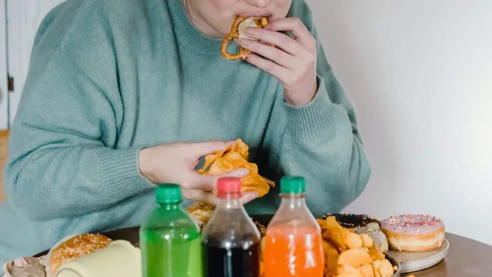

Dépendance à la nourriture : symptômes, causes et traitements d'une addiction

La dépendance à la nourriture, ou addiction à la nourriture, est un terme « apparu pour la première fois en 1956 » [1], qui correspond à un trouble de l’alimentation caractérisé par une consommation excessive et incontrôlée de nourriture. Les personnes atteintes de ce trouble ont souvent un rapport conflictuel avec la nourriture et peuvent souffrir de problèmes de santé mentale et physique.
« Le concept d’addiction à l’alimentation fait référence aux critères diagnostiques DSM de dépendance à une substance. Ce concept d’apparition récente vise à décrire les difficultés cliniques que rencontrent certains patients dans leurs relations à l’alimentation : la perte de contrôle sur la consommation alimentaire, une incapacité à réduire leur consommation malgré le désir de le faire ou encore la poursuite de comportement malgré la connaissance des effets négatifs de cette consommation alimentaire sur leur santé. » [2]
En effet, la dépendance alimentaire est liée à des apports incontrôlés associés à l'obésité et aux troubles du comportement alimentaire. Il s'agit d'un trouble cérébral complexe, chronique et multifactoriel qui résulte de l'interaction de plusieurs gènes et facteurs environnementaux. Sa prévalence augmente dans le monde et il n'existe aucun traitement totalement efficace.
Les effets de certains aliments sur le cerveau rendent parfois certaines personnes dépendantes, de la même façon que les autres dépendances, ce qui explique pourquoi elles ne peuvent pas se contrôler face à certains aliments. Cette dépendance à la nourriture amène les personnes à manger de grandes quantités d'aliments malsains, tout en sachant que cela peut leur causer des dommages à court et long terme.
Rarement possible à résoudre tout seul, la dépendance alimentaire est un problème qui nécessite de demander de l'aide auprès d'un professionnel de santé. Bien que certaines étapes pour surmonter la dépendance soient simples à mettre en place, un médecin pourra aider à identifier les aliments déclencheurs, à trouver des alternatives alimentaires plus saines et un traitement adapté selon l’âge et l'état de santé d'un patient.

Sommaire
- Qu'est-ce que la dépendance alimentaire ?
- Les addictions alimentaires - Vidéo
- Quelles sont les causes et comment fonctionne la dépendance alimentaire ?
- Quand la nourriture devient un réconfort - Vidéo
- Comment soigner et vaincre une addiction à la nourriture ?
- 6 clés pour lutter contre l'addiction à la nourriture - Vidéo
- Identification des marqueurs épigénétiques clés dans la dépendance alimentaire
- Ressources utiles sur l'addiction à la nourriture
- Sources
Qu'est-ce que la dépendance alimentaire ?

La dépendance alimentaire peut se définir comme une dépendance à la malbouffe et est comparable à la toxicomanie. Ce terme ou concept d'addiction à l’alimentation est récent et parfois controversé. La dépendance alimentaire est similaire à plusieurs autres troubles, notamment la boulimie, l'hyperphagie boulimique, et la suralimentation compulsive. [3]
Selon un article publié en 2016 dans la revue La Presse Médicale [4], « Les addictions, qui se caractérisent par une impossibilité à contrôler un comportement malgré la connaissance de ses conséquences négatives, ont des déterminants biologiques, psychologiques et sociaux. »
« S’il est désormais bien démontré qu’il est possible de développer une addiction vis-à-vis de certaines substances psychoactives (alcool, tabac, cannabis) et de la pratique des jeux de hasard et d’argent (jeu pathologique) la possibilité de développer une addiction sans drogue (ou addiction comportementale) vis-à-vis d’autres comportements sources de plaisir (alimentation, conduites sexuelles, achats) est encore débattue. »
« Le concept d’addiction à l’alimentation, qui fait référence à une relation de dépendance d’un individu vis-à-vis de certains aliments riches en graisse ou en sucre, a été récemment proposé en appliquant au comportement alimentaire les critères DSM de dépendance à une substance. »
« Pour mesurer l’addiction à l’alimentation, la Yale Food Addiction Scale est actuellement l’auto-questionnaire de référence (diagnostic d’addiction à l’alimentation et évaluation du nombre de symptômes d’addiction à l’alimentation). L’addiction à l’alimentation est plus fréquente chez les patients obèses, chez les patients présentant certaines caractéristiques psychopathologiques (dépression, trouble déficitaire de l’attention avec ou sans hyperactivité, forte impulsivité), célibataires ou encore, qui présentent certaines altérations neurobiologiques du système de la récompense. Il n’est par contre pas démontré à l’heure actuelle que ce trouble soit systématiquement responsable d’une prise de poids et/ou d’une obésité. »
Symptômes liés au problème d'addiction à la nourriture
Les principaux symptômes de la dépendance alimentaire sont ;
- envie et consommation excessive d'aliments malsains sans avoir une sensation de faim ;
- incapacité à résister et à contrôler l'envie de manger ;
- désirs fréquents de certains aliments ;
- manger au point de se sentir ballonné ;
- trouver des excuses pour justifier les envies ;
- mentir à son entourage sur la consommation d'aliments malsains (manger et stocker de la nourriture en cachette) ;
- stress et sentiment d'incapacité à contrôler la consommation d'aliments malsains ;
- etc.
A noter, qu'il n'y a pas de test sanguin (comme par exemple pour la gamma GT, le taux de chlore, le taux de monocytes, les IST, etc.) pour diagnostiquer la dépendance alimentaire. Comme pour les autres dépendances, elle est essentiellement basée sur des symptômes comportementaux.
Quelles sont les causes et comment fonctionne la dépendance alimentaire ?
Comment soigner et vaincre une addiction à la nourriture ?
Identification des marqueurs épigénétiques clés dans la dépendance alimentaire
Ressources utiles sur l'addiction à la nourriture
Sources
- L’addiction à la nourriture. Loïc Locatelli, Jorge César Correia, Alain Golay. Revue Médicale Suisse. 2015. https://www.revmed.ch/
- L’addiction à l’alimentation : définition, mesure et limites du concept, facteurs associés et implications cliniques et thérapeutiques. https://hal.archives-ouvertes.fr/
- Boulimie et hyperphagie boulimique : Repérage et éléments généraux de prise en charge. Recommandation de bonne pratique - Mis en ligne le 12 sept. 2019. HAS (Hautre autorité de santé). https://www.has-sante.fr/
- Sarah Cathelain, Paul Brunault, Nicolas Ballon, Christian Réveillère, Robert Courtois. L'addiction à l'alimentation : définition, mesure et limites du concept, facteurs associés et implications cliniques et thérapeutiques. La Presse Médicale, Elsevier Masson, 2016, ⟨10.1016/j.lpm.2016.03.014⟩. ⟨hal-01379564⟩
- Les addictions alimentaires. SOS Addictions. http://sos-addictions.org/
- Alejandra García-Blanco, Laura Domingo-Rodriguez, Judit Cabana-Domínguez, Noèlia Fernández-Castillo, Laura Pineda-Cirera, Jordi Mayneris-Perxachs, Aurelijus Burokas, Jose Espinosa-Carrasco, Silvia Arboleya, Jessica Latorre, Catherine Stanton, Bru Cormand, Jose-Manuel Fernández-Real, Elena Martín-García, Rafael Maldonado. miRNA signatures associated with vulnerability to food addiction in mice and humans. Journal of Clinical Investigation, 2022; 132 (10) DOI: 10.1172/JCI156281, https://www.jci.org/
- Les microARN circulants, une nouvelle classe de biomarqueurs pour la médecine. Med Sci (Paris). 2014 March; 30(3): 289–296. doi: 10.1051/medsci/20143003017. https://www.ipubli.inserm.fr/
- Psychologie Genève : http://psychologie-ge.ch/Tests3.html ; Clinique PTA, https://www.cliniquepta.com/questionnaire-de-depistage/ ; Garner DM, Olmsted MP, Bohr Y, Garfinkel PE. The eating attitudes test: psychometric features and clinical correlates. Psychol Med. 1982 Nov;12(4):871-8. doi: 10.1017/s0033291700049163. PMID: 6961471.
- Addictions Auvergne. http://www.addictions-auvergne.fr/
- Yale Food Addiction Scale. PDF. http://bariaddict-limoges.fr/ ; The Yale Food Addiction Scale (YFAS; Gearhardt, Corbin, & Brownell, 2009), https://sites.lsa.umich.edu/
- Crédits photo d'entête : pexels.com